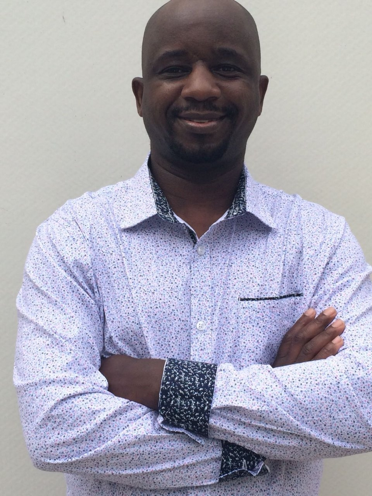

kimani Henry.
The founder of Transform Amani-Peace-Makers.
Kennedy Ndung'u.
The facilitator in Ruiru, Kenya.
Transform Amani-Peace-Makers Club was founded on 1st December 2012 by Henry Kimani Kariemu in Kenya. The initial steps involved songs that gave messages of hope and transformation to people across the nation. The club at that time was small and involved few members who participated in songs as a way of spreading the message.
Apart from the songs, the club through the help of God continued to enlarge in different areas. First, the club through Henry decided to be visiting the sick in hospitals and homes. These hospitals initially visited included Gatundu District Hospital, Ruiru Hospital, Thika Level 4 Hospital including others.
As a result of this, the club not only spread the message of hope through songs alone, but it diversified to other activities such as hospital ministry. This ministry has continued to grow and has spread to different hospitals. Through the hospital ministry, the club members participate in prayers with the sick people, share the word of God which brings healing and restorations
Since 2012, Transform Amani-peace-makers has continued to grow in different capacities which cut across families, societies and nations. As a result of this, our core pillar or foundation is the truth in the word of God. Through the foundation of the word of God, our club has continued to advance and God has been faithful to us.
Indeed we have seen God working in our plans and we reference Psalm 127:1-3 “Unless the LORD builds the house, its builders labour in vain. Unless the LORD watches over the city, the watchmen stand guard in vain.” NIV. Through these verses, we have learnt to surrender all to God who is the founder of our vision as the Transform Amani-Peace-Makers Club.
Coordination among the members has helped the club in achieving the goals. During the hospital visit, there is shaving services which are done by one of our member called Stanley Mambo.